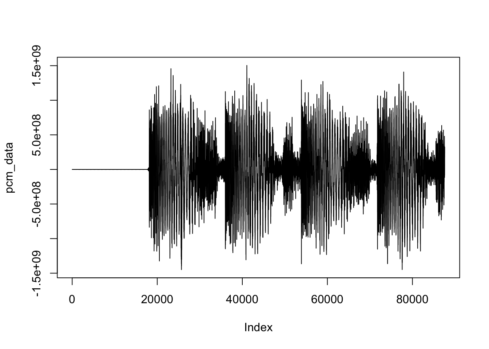

Code
library(tidyverse)
library(av)Tony D
May 5, 2025
video editing include change resolution and length using R and Python
Original video:
get_video_resolution_ffmpeg <- function(file_path) {
if (!file.exists(file_path)) {
stop("File does not exist.")
}
# Run ffmpeg command and capture output
cmd <- sprintf("ffmpeg -i %s 2>&1", shQuote(normalizePath(file_path)))
output <- system(cmd, intern = TRUE, ignore.stderr = FALSE)
# Find the line containing video stream details
video_line <- grep("Video:", output, value = TRUE)
if (length(video_line) == 0) {
stop("No video stream found.")
}
# Extract resolution using regex (e.g., 1920x1080)
resolution <- regmatches(video_line, regexpr("\\d{3,}x\\d{3,}", video_line))
if (length(resolution) == 0) {
stop("Resolution not detected.")
}
dimensions <- as.numeric(strsplit(resolution, "x")[[1]])
return(dimensions)
}# Input video file path
input_video <- "demo.mp4"
# Output video file path
output_video <- "demo_resolution.mp4"
# Desired width and height
new_width <- 960/3*2
new_height <- 720/3*2
# Construct the FFmpeg command for resizing
ffmpeg_command <- paste0(
"ffmpeg -i '", input_video, "' -vf scale=", new_width, ":", new_height, " '", output_video, "'"
)
# Execute the FFmpeg command
system(ffmpeg_command)
cat("Video resized to", new_width, "x", new_height, "and saved to", output_video, "\n")Video resized to 640 x 480 and saved to demo_resolution.mp4 Video after change resolution:
Resolution: 640x480# Define input/output files and timestamps
input_file <- "demo.mp4"
# Define input and output file paths
input_video <- "demo.mp4"
output_video <- "demo_change_length.mp4"
# --- Example 1: Trimming from the beginning ---
start_time <- "00:00:05" # Start at 5 seconds
duration <- "00:00:10" # Keep for 10 seconds
command_trim <- sprintf("ffmpeg -i %s -ss %s -t %s %s",
input_video, start_time, duration, output_video)
#command_trim
system(command_trim)
cat(paste("Trimmed video saved to:", output_video, "\n"))Trimmed video saved to: demo_change_length.mp4 Video after change length:
# Define the path to the input video file
input_video_path <- "demo.mp4" # Replace with your video file path
# Define the path to save the cropped video
output_video_path <- "demo_crop.mp4" # Replace with your desired output path
# Define crop parameters
crop_width <- 640 # Desired width of the cropped video
crop_height <- 360 # Desired height of the cropped video
crop_x <- 100 # X offset for cropping
crop_y <- 50 # Y offset for cropping
# Define the crop filter
crop_filter <- sprintf("crop=%d:%d:%d:%d", crop_width, crop_height, crop_x, crop_y)
# Crop the video
av::av_encode_video(
input = input_video_path,
output = output_video_path,
vfilter = crop_filter,
audio=input_video_path
)[1] "/Users/jinchaoduan/Documents/Project/Tech-blog/posts/video/demo_crop.mp4"Video cropped successfully and saved to: demo_crop.mp4 Video after crop:
[1] "output_img/image_000001.jpg" "output_img/image_000002.jpg"
[3] "output_img/image_000003.jpg" "output_img/image_000004.jpg"
[5] "output_img/image_000005.jpg" "output_img/image_000006.jpg"
[7] "output_img/image_000007.jpg" "output_img/image_000008.jpg"
[9] "output_img/image_000009.jpg" "output_img/image_000010.jpg"
[11] "output_img/image_000011.jpg" "output_img/image_000012.jpg"
[13] "output_img/image_000013.jpg" "output_img/image_000014.jpg"
[15] "output_img/image_000015.jpg" "output_img/image_000016.jpg"
[17] "output_img/image_000017.jpg" "output_img/image_000018.jpg"
[19] "output_img/image_000019.jpg" "output_img/image_000020.jpg"
[21] "output_img/image_000021.jpg" "output_img/image_000022.jpg"
[23] "output_img/image_000023.jpg" "output_img/image_000024.jpg"
[25] "output_img/image_000025.jpg" "output_img/image_000026.jpg"
[27] "output_img/image_000027.jpg" "output_img/image_000028.jpg"
[29] "output_img/image_000029.jpg" "output_img/image_000030.jpg"# Define the path to the input MP4 file
input_video_path <- "demo.mp4" # Replace with the path to your MP4 file
# Define the path to save the output MP3 file
output_audio_path <- "demo.mp3" # Replace with the desired output path for the MP3 file
# Convert MP4 to MP3
av::av_audio_convert(input_video_path,output_audio_path)[1] "/Users/jinchaoduan/Documents/Project/Tech-blog/posts/video/demo.mp3"Conversion complete! MP3 saved to: demo.mp3 
[1] "/Users/jinchaoduan/Documents/Project/Tech-blog/posts/video/demo_cut.mp3"---
title: "剪切视频/音频"
subtitle: "video/sound editing"
author: "Tony D"
date: "2025-05-05"
categories:
- Tool
- R
- Python
execute:
warning: false
error: false
image: 'images/images.jpg'
---
video editing include change resolution and length using R and Python
Original video:
{{< video demo.mp4 >}}
# Video
```{r}
library(tidyverse)
library(av)
```
## check video resolution
```{r}
get_video_resolution_ffmpeg <- function(file_path) {
if (!file.exists(file_path)) {
stop("File does not exist.")
}
# Run ffmpeg command and capture output
cmd <- sprintf("ffmpeg -i %s 2>&1", shQuote(normalizePath(file_path)))
output <- system(cmd, intern = TRUE, ignore.stderr = FALSE)
# Find the line containing video stream details
video_line <- grep("Video:", output, value = TRUE)
if (length(video_line) == 0) {
stop("No video stream found.")
}
# Extract resolution using regex (e.g., 1920x1080)
resolution <- regmatches(video_line, regexpr("\\d{3,}x\\d{3,}", video_line))
if (length(resolution) == 0) {
stop("Resolution not detected.")
}
dimensions <- as.numeric(strsplit(resolution, "x")[[1]])
return(dimensions)
}
```
```{r}
resolution <- get_video_resolution_ffmpeg("demo.mp4")
cat(sprintf("Resolution: %dx%d", resolution[1], resolution[2]))
```
## check video length and size
```{r}
video_info <- av::av_media_info("demo.mp4")
video_length <- video_info$duration
cat("video length:",video_length)
video_size_mb <- file.info("demo.mp4")$size / (1024^2)
cat("video size in mb:",video_size_mb)
```
## change video resolution
```{r}
# Input video file path
input_video <- "demo.mp4"
# Output video file path
output_video <- "demo_resolution.mp4"
# Desired width and height
new_width <- 960/3*2
new_height <- 720/3*2
# Construct the FFmpeg command for resizing
ffmpeg_command <- paste0(
"ffmpeg -i '", input_video, "' -vf scale=", new_width, ":", new_height, " '", output_video, "'"
)
# Execute the FFmpeg command
system(ffmpeg_command)
cat("Video resized to", new_width, "x", new_height, "and saved to", output_video, "\n")
```
Video after change resolution:
{{< video demo_resolution.mp4 >}}
```{r}
resolution <- get_video_resolution_ffmpeg(output_video)
cat(sprintf("Resolution: %dx%d", resolution[1], resolution[2]))
```
```{r}
video_info <- av::av_media_info(output_video)
video_length <- video_info$duration
cat("video length:",video_length)
video_size_mb <- file.info(output_video)$size / (1024^2)
cat("video size in mb:",video_size_mb)
```
## change length of video
```{r}
# Define input/output files and timestamps
input_file <- "demo.mp4"
# Define input and output file paths
input_video <- "demo.mp4"
output_video <- "demo_change_length.mp4"
# --- Example 1: Trimming from the beginning ---
start_time <- "00:00:05" # Start at 5 seconds
duration <- "00:00:10" # Keep for 10 seconds
command_trim <- sprintf("ffmpeg -i %s -ss %s -t %s %s",
input_video, start_time, duration, output_video)
#command_trim
system(command_trim)
cat(paste("Trimmed video saved to:", output_video, "\n"))
```
Video after change length:
{{< video demo_change_length.mp4 >}}
```{r}
video_info <- av::av_media_info("demo_change_length.mp4")
video_length <- video_info$duration
cat("video length:",video_length)
video_size_mb <- file.info("demo_change_length.mp4")$size / (1024^2)
cat("video size in mb:",video_size_mb)
```
## video Crop
```{r}
# Define the path to the input video file
input_video_path <- "demo.mp4" # Replace with your video file path
# Define the path to save the cropped video
output_video_path <- "demo_crop.mp4" # Replace with your desired output path
# Define crop parameters
crop_width <- 640 # Desired width of the cropped video
crop_height <- 360 # Desired height of the cropped video
crop_x <- 100 # X offset for cropping
crop_y <- 50 # Y offset for cropping
# Define the crop filter
crop_filter <- sprintf("crop=%d:%d:%d:%d", crop_width, crop_height, crop_x, crop_y)
# Crop the video
av::av_encode_video(
input = input_video_path,
output = output_video_path,
vfilter = crop_filter,
audio=input_video_path
)
cat("Video cropped successfully and saved to:", output_video_path, "\n")
```
Video after crop:
{{< video demo_crop.mp4 >}}
# video to image
```{r}
# Convert MP4 to images (frames)
av_video_images(
video = "demo.mp4",
destdir = "output_img", # Save frames as PNG files
format = "jpg",
fps = 1 # Extract 1 frame per second (adjust FPS as needed)
)
```
# convert mp4 to mp3
```{r}
# Define the path to the input MP4 file
input_video_path <- "demo.mp4" # Replace with the path to your MP4 file
# Define the path to save the output MP3 file
output_audio_path <- "demo.mp3" # Replace with the desired output path for the MP3 file
# Convert MP4 to MP3
av::av_audio_convert(input_video_path,output_audio_path)
cat("Conversion complete! MP3 saved to:", output_audio_path, "\n")
```
# Audio
```{r}
library(av)
```
## Changing lengto of mp3
```{r}
video_info=av::av_media_info("demo.mp3" )
video_info$duration
```
{{< video file="demo.mp3" >}}
```{r}
pcm_data <- read_audio_bin("demo.mp3" , channels = 1, end_time = 2.0)
plot(pcm_data, type = 'l')
```
```{r}
start_time <- 2 # Start at 1 seconds
total_time <- 4 # Keep for 10 seconds
av_audio_convert(audio="demo.mp3",output="demo_cut.mp3",start_time=start_time,total_time=total_time)
```
```{r}
video_info=av::av_media_info("demo_cut.mp3")
video_info$duration
```
{{< video file="demo_cut.mp3" >}}
## convert mp3 to wav